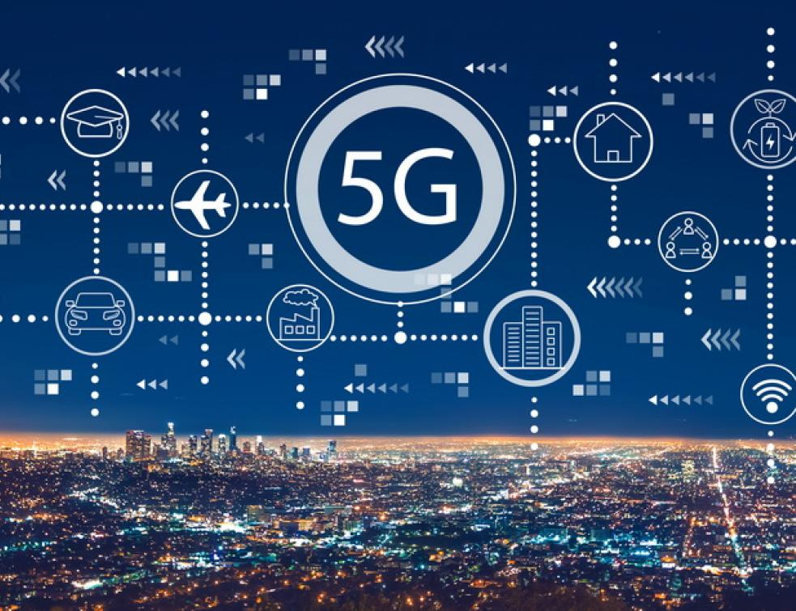

Article
- La Télécommunication
- La Cyber Securité
- Quality Of Service
- Réseau 5G
- Internet Of Things(IoT)
La Télécommunication
23/07/2020
Aujourd’hui plus que jamais, les télécoms ont une place essentielle dans le fonctionnement des entreprises. Les technologies de l’information et de la communication sont en effet utilisées à tous les niveaux, par la grande majorité des professionnels. Découvrez donc l’importance du rôle des télécommunications dans les entreprises.
Cliquez ici
Cliquez ici
Cyber securité
23/07/2020
La cybersécurité englobe tous les moyens qui permettent d’assurer la protection et l’intégrité des données, sensibles ou non, au sein d’une infrastructure numérique. C’est une spécialité au sein des métiers des systèmes d’information. La notion de cybersécurité intervient de façon récurrente grâce à la transformation numérique des entreprises, qui généralisent l’utilisation d’outils informatiques et la communication via Internet.
Cliquez ici
Cliquez ici
Quality Of Service
23/07/2020Le terme QoS (acronyme de « Quality of Service », en français « Qualité de Service ») désigne la capacité à fournir un service (notamment un support de communication) conforme à des exigences en matière de temps de réponse et de bande passante.
Cliquez ici
Cliquez ici
Réseau 5G
23/07/2020
La « 5G » est la cinquième génération de réseaux mobiles, qui succède aux technologies 2G, 3G et 4G.
Les premières technologies ne permettaient que les appels vocaux puis l’envoi de SMS. Les générations suivantes de technologies mobiles ont permis de développer de nouveaux usages : se connecter à internet, accéder à des applications, ou encore passer des appels en vidéo.
Comme les technologies précédentes, la 5G améliorera les services existants et favorisera le développement de nouveaux services. La 5G est une technologie évolutive qui va s’enrichir progressivement, au gré de l’évolution des standards au niveau mondial.
Cliquez ici
Cliquez ici
Internet Of Things (IoT)
23/07/2020
Dans l'Internet des objets, un « objet » peut être une personne équipée d'un pacemaker, un animal de ferme qui porte une puce (transpondeur), une voiture qui embarque des capteurs pour alerter le conducteur lorsque la pression des pneumatiques est trop faible, ou encore tout objet naturel ou fabriqué par l'être humain auquel peuvent être attribuées une adresse IP et la capacité de transférer des données sur un réseau.
Cliquez ici
Cliquez ici